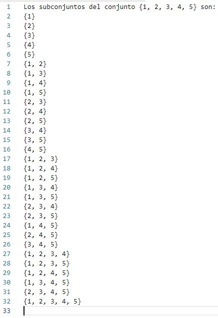
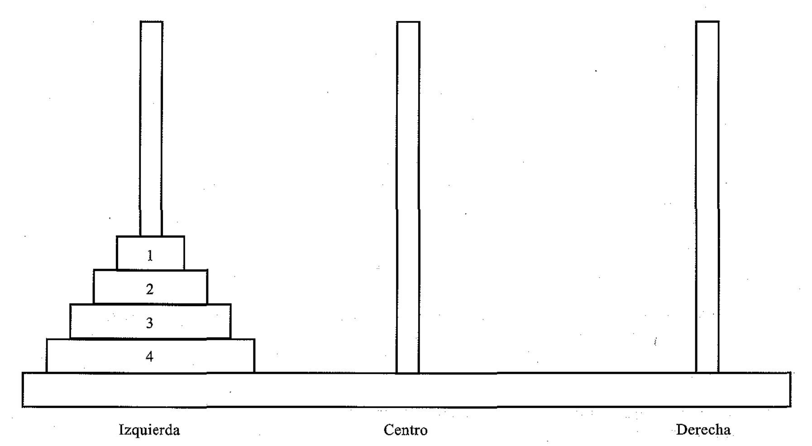

Escribe una función recursiva en Python que reciba como argumento dos números enteros positivos $a$ y $b$ y determine el cociente entero (división sin punto decimal) de $a$ entre $b$.
Escribe una función recursiva en Python que reciba como argumento dos números enteros positivos $a$ y $b$ y determine el producto $a$ por $b$.
Escribe una función recursiva en Python que reciba como argumento dos números enteros positivos $a$ y $n$ y determine la potencia $a^n$.
Escribe una función recursiva en Python que reciba como argumento un número entero $n$ y determine el valor absoluto de $n$.
Escribe una función recursiva en Python que calcule la suma de los $n$ primeros términos de la serie armónica $\displaystyle{\sum_{i=1}^{n} \frac{1}{i}}$
Utiliza try-except para escribir una función en Python que solicite al usuario que ingrese un número entero y genere una excepción ValueError si la entrada no es un número entero.
Utiliza try-except para escribir una función en Python que reciba el nombre de un archivo, lo abra e imprima su contenido y genere una excepción fileNotFoundError si el archivo no existe.
Utiliza try-except para escribir una función en Python que abra un archivo y genere una excepción PermissionError si hay un problema de permiso.
Utiliza try-except para escribir una función en Python que reciba una lista no vacia, luego genere un número entero aleatorio $n$ entre $0$ y el doble de la longitud de la lista e imprima el elemento de la lista en la posición $n$ genera una excepción IndexError si el índice está fuera de rango.
Utiliza try-except para escribir una función en Python que solicite al usuario ingresar un número entero positivo, e imprima la raiz cuadrada del número ingresado, genera una excepción ArithmeticError si el se intenta calcular la raiz cuadrada de un número negativo.
Utiliza try-except para escribir una función en Python que solicite al usuario que ingrese un número entero o una lista de números enteros e determine el máximo del objeto ingresado máximo a este número, genera una excepción AttributeError si elatributo no existe.
Escribe una función recursiva en Python que reciba como argumento un número entero positivo $n$ determine e imprima todos los subconjuntos no vacios del conjunto $\{1,2,\ldots,n\}$. Por ejemplo, si $n=4$, se debe imprimir (aunque no necesariamente en ese orden):

Escribe una función recursiva en Python que reciba como argumento un número entero positivo $n$ y encuentre todos las permutaciones de los números $1,2,\ldots,n$.
Escribe una función recursiva en Python que determine el capital $C_{n}$ obtenido al invertir un capital inicial $C_0$ a una tasa de interés compuesto durante $n$ años al interés anual $r$ (expresado en porcentaje).
Observación: Considera la fórmula de interés compuesto: $$C_n = C_0 \left(1 + \frac{r}{100} \right)^{n}$$
Las Torres de Hanoi son un conocido juego de niños, que se juega con tres pivotes y un cierto número de discos de diferentes tamaños. Los discos tienen un agujero en el centro, con lo que se pueden apilar en cualquiera de los pivotes. Inicialmente, los discos se amontonan en el pivote de la izquierda por tamaño decreciente, es decir, el más grande abajo y el más pequeño arriba, como se ilustra en la siguiente Figura. El objetivo del juego es conseguir llevar los discos del pivote más a la izquierda al de más a la derecha, sin colocar nunca un disco sobre otro más pequeño. Sólo se puede mover un disco cada vez, y cada disco debe encontrarse siempre en uno de los pivotes.

La estrategia general a seguir es considerar uno de los pivotes como origen y el otro como destino. El tercer pivote se utilizará para almacenamiento auxiliar, con lo que podremos mover los discos sin poner ninguno sobre otro más pequeño. Supongamos que hay $n$ discos, numerados del más pequeño al más grande, como en la Figura de arriba. Si los discos se encuentran apilados inicialmente en el pivote izquierdo, el problema de mover los $n$ discos al pivote derecho se puede formular de la siguiente forma recursiva:
El problema se puede resolver de esta manera para cualquier valor de $n$ mayor que $O$ ($n=0$ representa la condición de fin). Con vistas a la redacción del programa, primero etiquetaremos los pivotes, de forma que el pivote izquierdo se representará por I, el del centro por C y el derecho por D.
Escribe una función recursiva en Python que determine los movimientos que se deben realizar para solucionar el problema de las torres de Hanoi